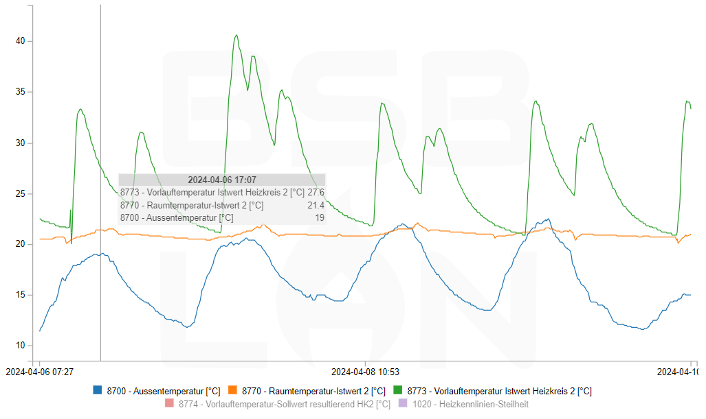

Using BSB-LAN
Controlling the heating system via the web-interface
As a first step – or if you just want to turn your heating system on or off – you can simply open the BSB-LAN web-interface and go to the Settings menu. This will display a list of categories from your heating controller.
You can click on each category and will get a list of corresponding parameters. If you see a Set button, it means the parameter can be changed, and clicking on the button will send the new value to the heater. If there is no Set button, the parameter is read-only and there is no way to change the parameter.

Using BSB-LAN's URL commands
Most of BSB-LAN's functionality can be controlled using URL commands. These are useful or even necessary when connecting BSB-LAN to a home automation system, but also provide access to functions not directly accessible via the web-interface.
URL commands are called right after BSB-LAN's hostname and an (optional) passkey. So to get a list of categories, one would have to open the URL http://bsb-lan.local/K (or http://bsb-lan.local/1234/K if the passkey 1234 is in use).
Querying and setting parameters
| URL command |
Functionality |
/<x> |
Query setting of parameter <x> |
/<x>!<addr> |
Query setting of parameter <x> from controller at destination address <addr> |
/<x>/<y>/<z> |
Query settings of parameters <x>, <y> and <z>. Parameters can include ! to address different controllers. |
/<x>-<y> |
Query settings of parameters <x> to <y> |
/<x>!<addr>-<y> |
Query settings of parameters to from controller at destination address <addr> |
/K |
List all parameter categories from controller at default destination address |
/K!<addr> |
List all parameter categories from controller at destination address <addr> |
/K<x> |
Query all parameters of category <x> from controller at default destination address |
/K<x>!<addr> |
Query all parameters of category <x> from controller at destination address <addr> |
/S<x>=<y> |
Set parameter <x> from controller at default destination address to value . To set a parameter to --- (off/deactivated), just send an empty value: S<x>= |
/S<x>!<addy>=<y> |
Set parameter <x> from controller at destination address <addr> to value <y>. |
/I<x>=<y> |
Send value y as INF telegram to parameter <x>. So far only required with setting room temperature (parameters 10000 ff.). |
Configuration
| URL command |
Functionality |
/C |
Configuration |
/CO |
Dump BSB-LAN's configuration |
/P<x>,<y>,<z> |
Temporarily set bus type to <x>, own address to <y> and target address to <z>. |
/V<x> |
Enable (1) or disable (0) verbose output mode. Should remain enabled unless specifically instructed. |
Logging
| URL command |
Functionality |
/DG |
Graphical display (graph plot) of an active log file |
/D or /DD |
Dumps log file datalog.txt from storage. Contains the logged parameters and values when logging to SD card is active. |
/D<n> |
Dumps the most recent <n> calender days of the log file |
/D<a>,<b> |
Dumps data from log file between <a> and <b>. <a> and <b> have to be set in the format yyyy-mm-dd (e.g. /D2024-04-01,2024-04-30) |
/D0 |
Reset both log files datalog.txt and journal.txt and create new headers. Should be executed before first logging. |
/DK<n> |
Purges data older than <n> days from the log file |
/LN |
Forces logging irrespective of current interval and restarts the configured interval at this point of time |
/L=<x>,<y>,<z> |
Set logging interval to <x> seconds and (optionally) reset logging parameters to <y>, <z> etc. until reboot |
/L=0,0 |
Deactivate logging to storage until reboot |
/LB=<x> |
Log only broadcast telegrams (1) or all telegrams (0). Setting active until reboot. |
/LU=<x> |
Log only unknown bus telegrams (1) or all telegrams (0). Setting active until reboot. |
/A=0 |
Disable 24h average calculation until reboot |
/A=<x>,<y>,<z> |
Change 24h average value calculation to parameters <x>, <y> and <z> until reboot |
/B0 |
Reset stats for accumulated burner-runtime and -cycles |
/DD0 |
Remove log file datalog.txt only |
/DJ |
Dumps log file journal.txt from storage |
/DJ0 |
Remove log file journal.txt only |
/LD |
Disable logging of telegrams to journal.txt until reboot |
/LE |
Enable logging of telegrams to journal.txt |
| URL command |
Functionality |
/E<x> |
Displays parameter options of parameter <x>. Only available for option-type parameters such as data types VT_ENUM, VT_CUSTOM_ENUM, VT_BITS and VT_CUSTOM_BITS. |
/R<x> |
Query default setting of parameter <x> |
GPIO control
| URL command |
Functionality |
/G<x> |
Displays the actual state of GPIO pin <x> |
/G<x>=<y> |
Set GPIO pin <x> to HIGH (<y> = 1) or LOW (<y> = 0) |
/G<x>,I |
Query GPIO pin <x> while setting the pin to INPUT. Might be (un)necessary depending on your microcontroller. |
JSON interface
| URL command |
Functionality |
/JQ=<x>,<y>,<z> |
Query parameters <x>, <y> and <z> and return a JSON structure |
/JQ |
Query parameters based on a received JSON structure via HTTP POST |
/JK=<x> |
Query all parameters of category <x> |
/JS |
Set parameters based on a received JSON structure via HTTP |
/JR<x> |
Query default value of parameter <x> and return a JSON structure |
/JK=ALL |
Dump ranges for all available categories as JSON structure |
/JC=<x>,<y>,<z> |
Dump possible values for parameters <x>, <y> and <z> for option-type parameters. Same JSON structure as /JK=<x>. |
/JB |
Backup of all writeable parameters in a JSON structure that can be used to write back using /JS |
/JL |
Creates a JSON structure of BSB-LAN's configuration settings` |
/JW |
Writes configuration settings based on a JSON structure created by /JL |
/JI |
Dump runtime information of BSB-LAN as JSON structure` |
/JV |
Return the version of BSB-LAN's JSON-API as a JSON structure |
Misceallaneous
| URL command |
Functionality |
/M<x> |
Send (1) or revoke (0) MQTT auto-discovery messages for all parameters from controller at default destination address. |
/N |
Reset and reboot microcontroller (takes approx. 15 seconds) |
/NE |
Erase EEPROM and reboot the microcontroller. All configuration settings will subsequently be read from configuration file until set and saved again in the web-interface to be written to EEPROM. |
/QD |
Dump parameter structure from heating system |
/W |
With a preceding /W the URL commands C, S and Q return data without HTML header and footer (e.g.: /WC or /WS<x>=<y!z>). |
Using the graphical plot functionality

If logged data on storage (either SD card or internal flash) is available, the Display log file becomes clickable. By default, it will display the logged data in the browser.
To access the logged data itself (in the file datalog.txt), use the /D URL command mentioned above.
By default, "Display log file" displays the log data of the most recent n calendar days (n=DEFAULT_DAYS_TO_PLOT, configurable in BSB_LAN_config.h). Subsequently, controls on the web page can be used to select a different range, depending on the data contained in the log file
Mouseover, click and mouse wheel actions within the graphical display provide various control options:
- Better legibility for value numbers with plot lines close to each other (mouseover on plot)
- Users can interactively highlight plot lines for improved overview (mouseover on legend entries)
- Users can interactively disable plot lines for improved overview and vertical scaling (click on legend entries)
- Zoom (mousewheel/pinch on plot) and pan capability (drag zoomed-in plot)